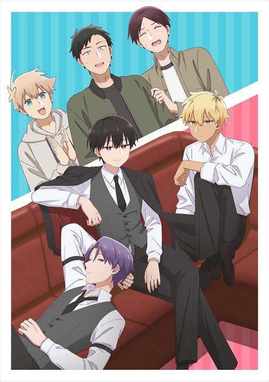
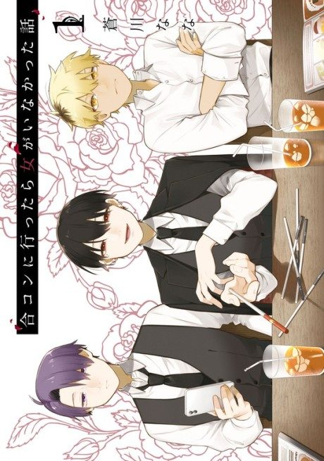

Anime
MangaHow I Attended an All-Guy's Mixer
合コンに行ったら女がいなかった話
After the anime, read the manga from Chapter 35.
7.3AniList
—Animeter
12 epEpisodes
Anime finished. Where does the manga pick up?
Start at Chapter35
The anime adapts to around chapter 34, so start at chapter 35 (volume 6). Episode 12 adds anime-original material, and the manga is still ongoing.
134ongoing
Season 1Start reading here